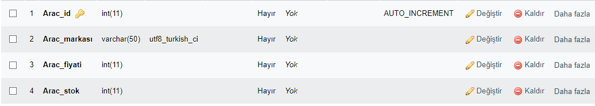

Herkese merhaba bu projemde sizlere Rent a Car Sitesini nasıl yaptım ,arka planında hangi kodlar mevcut bunlardan bahsedicem.
Rent a Car projemin kodlarına ulaşmak isterseniniz : GitHub
XAMPP PROGRAMINI İNDİRME VE MYSQL
Öncelikle PHP kodunun ve phpMYAdmin veri tabanının çalışması için XAMPP uygulamasını indirmemiz gerekiyor.
Aşağıda ki adımları izlemenizi istiyorum. Buraya tıklayarak aşağıdaki işletim sistemlerinden size uyanı seçip indir sekmesine tıklayın.
XAMPP indirme konumu
XAMPP CONTROL PANEL
Gerekli indirme işlemini yaptıktan sonra setup dosyasını bilgisayarınıza kurun.
Şimdi PHP kodlarının aktif gelmesi için yapmamız gereken işlem XAMPP Control Panelinden ilk başta bulunan Apache modülünün yanındaki start butonuna basıp, aktif etmeniz gerekir.
Benim gibi MySQL veri tabanını kullanmak istiyor iseniz eğer Apache yanında bulunan MySQL modülününün yanınadki start butonuna ve admin butonuna basıp aktif etmeniz gerekir.
Tabiki bu kadar değil ,şimdi ise PHP kodlarının çalışması için ana(main) dosyanızı örneğin:"index.php" XAMPP uygulamasının içindeki htdocs klasörüne atmamız gerekiyor.(tabikide apache butonunu aktif ettikten sonra)
PHP VE MYSQL VERİ TABANI
PHP bir web programlama dili ve MySQL'de bir SQL veritabanıdır.
Ben projemde PHP ve MySQL veritabanını kullandım.Bildiğim kadarıyla PHP başka veri tabanları ile de kullanılabilmektedir.
PHP aynı HTML gibi sade metin dosyalarıdır.Tek farkı PHP kodlarını ve MySQL veri tabanını çalıştırmak için LocalHost işlemi yapmamız gereklidir.
Sizlere zaten yukarıda hangi programı kullandığım ve nasıl aktif edebileceğinizden kısaca bahsettim.
Örneğin bir PHP koduna bakalım
PHP kodunu kullanarak 'Hello World!' yazımı.
RESİMİN KODLARI
< ?php
echo 'Hello World!';
?>
PHP kodları bu iki etiketin arasına yazılır. '< ?php ?>'
Echo etiketi içine yazılan değer ekrana çıktı olarak döner.
PHPMySQL VERİ TABANI
PHPMySQL Veri tabanı kullanmak oldukça basittir.Öncelikle size veri tabanını nasıl kullanacağınızdan bahsedicem.
✔️Uygulamadan MySQL i aktif ettikten sonra localhost/phpmyadmin/ den veri tabanına giriş yapabilirsiniz.
✔️Veri tabanı oluşturmak için sol tarafta bulunan yeni adlı kısma basıp veri tabanı oluşturabilirsiniz.
✔️Yeni adlı kısma bastıktan sonra oluşturacağınız veri tabanının adını ve yanında bulunan dil seçeneklerini seçip oluştur a bastıktan sonra
veri tabanına veri türleri,sütun isimlerini ve verileri girmeniz gerekiyor.Buradan PHPMyadmin oluşturma gidip bakabilirsiniz.
PROJEDEKİ PHP KODLARI
Genel olarak PHP'nin nasıl çalıştığını anlattım.Şimdi ise projemde kullandığım PHP kodlarını anlatıcam.
if döngüsü ile $kayit diye oluşturduğum değişken -> işaret ile veri tabanına yönlendirip num_rows>0 dan büyük olanları döngüye soktum.
While döngüsü ile $satir diye oluşturduğum değişken ve $kayit diye oluşturduğum değişkeni fetch_assoc komutuyla veritabanına yönlendirdim.
Echokomutuyla veri tabanındaki oluşturduğum tablodaki gerekli verileri çektim.
num_rows:Bir sonuç kümesinden satırların sayısını gösterir.
fetch_assoc(): Sütun isimlerine indisli bir dizi döner.Yani bizi veri tabanına yönlendirir.
echo "Araç Numarası:" . $satir["Arac_id"]:Bu satırda ise echo komutuyla Araç numarası adlı sütunu $satir değişkenini kullanarak veri tabanından Arac_id kısmını gösterir.
PHP KULLANARAK VERİ TABANI ÇAĞIRMA
Bu bölümde size projemde PHP dilini kullanarak MySQL veri tabanını nasıl çağırdığımdan bahsedicem.
Bu işlemi yapmadan önce tabiki önce veri tabanını oluşturup içine de size uygun tabloyu oluşturmanız gerekiyor.Bu işlemi nasıl yaptığımı size anlattım.
Neyse şimdi kodlara geçicek olursak;
Error_reporting() ile ilk olarak php kodlarında hata ayıklama işlemini başlattım. Sunucumu ve veri tabanını belirlemek için $servername ve $dbname adında değişken oluşturup MySQLadmin de oluşturduğum "arac" isimli veri tabanını çağırdım.
$conn diye oluşturduğum değişkene new mysqli ile veri tabanı işlemlerini atadım.$new değişkenine isemysqsli_set_charset komutu ile $conn değişkenini utf8 olarak attım.
İf döngüsü ile $conn değişkeninde hata var mı yok mu diye sorguladım.
İf döngüsünün içine $_POST değişkenini kullanarak veri tabanından "Aracid" sütununu çektim. Devamında $bul değişkenine veri tabanındaki "araclar" tablosunda "Arac_id si $no olanları" çektirdim ve son olarak $kayit değişkeni ile veri tabanına ulaştım.
Yukarıda gördüğünüz projemdeki kısımda text kısmına 1'den 6'ya kadar sayı girip göster kısmına tıklarsanız veri tabanındaki "Arac_id si #no olanları" listeler.
error_reporting():Hata mesajı vermesini sağlayabilir veya hata mesajlarını göstermesini engeller.
new mysqli:Veri tabanınındaki değerleri projeye getirir.
SELECT * FROM araclar where Arac_id='$no 'Araclar tablosundaki verilerin hepsini seçip Arac_id si '$no' olanlara göre aratır.
BOOTSTRAP NEDİR?
Bootstrap tasarlanacak web sitelerinin tablet, telefon, bilgisayar gibi her türlü ekran çözünürlüğüne duyarlı olacak şekilde ayarlamaya yarayan açık kaynak kodlu bir framework olarak denilebilir.
Bu bölümde Veritabanı ile ilgili tablo oluşturma üzerinde duracağız. Aşağıdaki tabloyu PhpMyAdminde oluşturdum,XAMPP yüklediyseniz http://localhost/phpmyadmin yazarak, PhpMyAdmin veritabanı yönetim arayüzüne ulaşabilirsiniz.
Size yukardaki bölümde veri tabanı oluşturmayı anlatmıştım.Veritabanı oluşturduktan sonra araclar tablomuzu oluşturdum.

Yukarıdaki oluşturduğum tabloda Arac_id kısmını Primary Key olarak ayarladım.4 tane sütun oluşturduktan sonra türlerini belirledim.
Primary Key:PRIMARY KEY(birincil anahtar) olarak atanan sütunlar null değer içeremez. Bir tabloda yalnızca bir Primary key olabilir ve tabloda, bu birincil anahtar bir veya birden fazla sütundan oluşabilir.
Varchar:Tabloda verinin türünü belirlemek için kullanılır.Karakter anlamına gelir.
İnt:Tabloda verinin sayı olduğunu belirlemek için kullanılır.
PROJEME RESİM GALERİSİ EKLEMEK
Projeme nasıl Lightbox(resim galerisi) ekledim bu bölümde kısaca ondan bahsedicem. Resim galerisini yapmak istiyorsanız hem HTML hem de CSS dilini kullanmanız gerekmektedir.HTML resimleri göstermek CSS ise şeklini düzenlemek için gereklidir.
Resim galerisi yapmak için aşağıdaki kodları kullanabilirsiniz.
--KODLARI--
< div class="galeri">
< a href="image/res1.png">
< img src="image/res1.png" >
< /a>
< a href="image/res2.png">
< img src="image/res2.png" >
< /a>
< a href="image/res3.png">
< img src="image/res3.png" >
< /a>
< a href="image/res4.png">
< img src="image/res4.png" >
< /a>
< /div>
Bu bölümde PHP de Array (dizi) oluşturarak bu dizi içindeki elemanların tablo içine aktarılmasını göstericem.
--KODLARI--
$urunler diye değişken oluşturup içine array komutu ile dizi oluşturdum ve verileri girdim. Sonrasında ise < table < /table> komutu ile tablo oluşturdum.
Son olarakta foreach döngüsü ile oluştudurduğum tabloyu ekrana yazdırdım.
RENT A CAR PROJE VİDEOSU
PROJE ÖNİZLEME
İLETİŞİM
Yaptığım projeye daha detaylı bakmak ve benimle iletişime geçmek için aşağıdaki bağlantılardan tıklayarak ulaşabilirsin.